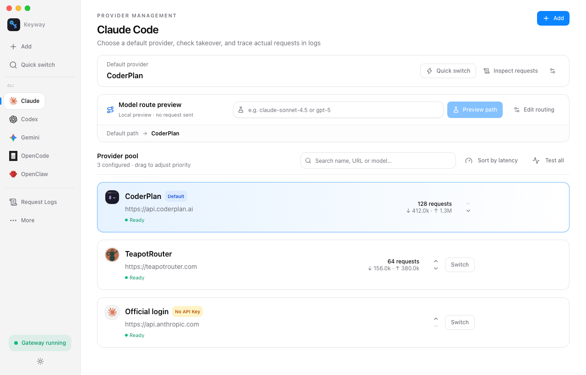

macOS: one terminal line installs (or updates) — no Gatekeeper prompts:
curl -fsSL https://keyway.one/install.sh | sh
最新正式版 v0.2.17 · macOS / Windows / Linux
Keyway

More clarity. Not just switching.
Default providers, connection status and actual requests — clearly distinguished.
Switch with clarity.
Sessions already using the proxy need no restart when changing the default provider. New requests follow the updated configuration; in-flight requests do not migrate.
Encrypted key storage.
API keys live in a local SQLCipher-encrypted database; its master key is held in the system keychain. Provider configuration exports exclude API keys.
Errors you can inspect.
Check providers, models, status codes and errors in request logs. When routing or failover changes the destination, you have more than a guess.
Local-first · not a hosted relay
Know where every request goes.
Keyway keeps the control plane on your machine: it does not host your API keys, sell model access, or present the default provider as the actual destination.
01Your CLI
Claude Code · Codex · Gemini
→
02Keyway
Local proxy · 127.0.0.1:9527
→
03Your chosen provider
Official · relay · self-hosted endpoint
Keys stay localStored in an encrypted local database; exports exclude API keys.
Separate the statesProxy running, CLI takeover and request success are three different things.
Reversible changesOriginal configs are backed up; conflicts stop an overwrite.
Switching, in a keystroke.
Connect to the proxy first, then switch your default provider. Start a new Codex session after first-time takeover; later switches need no restart.
⌘⇧Kki
1Kimi✓ 180ms
2GLM Coding Plan✓ 210ms
3DeepSeek✓ 460ms
4OpenAI✗ 401
↑↓ navigate · Enter switch · 1-9 pick · Esc close
The ⌘⇧K quick switch panel — no config to touch
Far more than switching.
From key safety to request observability, Keyway is the local gateway for your AI CLIs.
Automatic failover
Configure and enable a backup chain to try the next candidate after retryable upstream failures. Recovery is not guaranteed once a streaming response has begun.
Model routing rules
Route specific models to specific providers: e.g. claude-* to official, deepseek-* to a relay — preview the path, then dispatch by model name.
Request logs
The last 100 requests, item by item: actual provider, model, tokens in/out, status code and latency. Debugging at a glance.
Usage & success rate
Token usage and request success rate aggregated by CLI and by provider. Who's stable, who's costly — let data decide.
Multiple profiles
Work / personal / testing — snapshot provider sets, save and switch anytime without interference.
Backup & migration
Export provider configs to JSON with one click (keys excluded). Moving machines or sharing presets is easy. Imports from the 5 CLIs with automatic takeover.
Key vault
API keys are stored in a local SQLCipher-encrypted database; its master key is held in the system keychain. Provider configuration exports exclude API keys.
Connectivity test
One-click latency and reachability test per provider, before you switch.
Onboarding + tray
A three-step wizard: pick CLIs, add providers, take over in one click. Lives in the menu bar for instant switching.
Common providers built in — just paste your key.
Presets for official endpoints, popular model services and third-party gateways; any OpenAI / Anthropic / Gemini compatible endpoint works too.
Keyway runs a local proxy (127.0.0.1:9527). Connected CLI requests follow your default provider, routing rules and failover settings. Request logs show actual destinations.
How are my API keys stored?
API keys live in a local SQLCipher-encrypted database; its master key is held in the system keychain. Provider configuration exports exclude API keys. Authentication is sent to the selected upstream when forwarding requests.
Which AI CLIs are supported?
Keyway provides 9 CLI groups across the Anthropic / OpenAI / Gemini protocols. Claude Code, Codex CLI, Gemini CLI, OpenCode and OpenClaw support automatic takeover; other groups can be connected manually using the variables supported by each CLI.
Do I need to restart running sessions after switching?
Sessions already using the proxy need no restart when changing the default provider. New requests follow the updated configuration; in-flight requests do not migrate. First-time Codex takeover needs a new session, and routing rules still take priority.
Can I use multiple providers at once?
Yes. Model routing rules send different models to different providers; failover switches to backups on upstream errors; profiles swap whole work / personal setups in one tap.
How do I revert to my original setup?
Click Restore in takeover management to undo Keyway's configuration changes while keeping unrelated edits. Conflicts in managed fields or generated entries stop the restore; the file and backup are retained for inspection.
Is it free?
Keyway is completely free and open source (MIT). You only pay the model providers you use.
Will my CLI work after quitting Keyway?
CLIs connected to the local proxy depend on Keyway running. Closing the window keeps it in the tray; fully quitting stops the proxy. Restore configs first if you need direct connections. An offline proxy and an upstream provider failure are different states.
* Configuration and usage records are stored in an encrypted local database. The proxy sends request content and authentication to the selected model provider; local storage does not mean offline inference.
** Claude Code, Codex, Gemini CLI, OpenCode and OpenClaw are products of their respective owners; Keyway is not affiliated with Anthropic, OpenAI or Google.